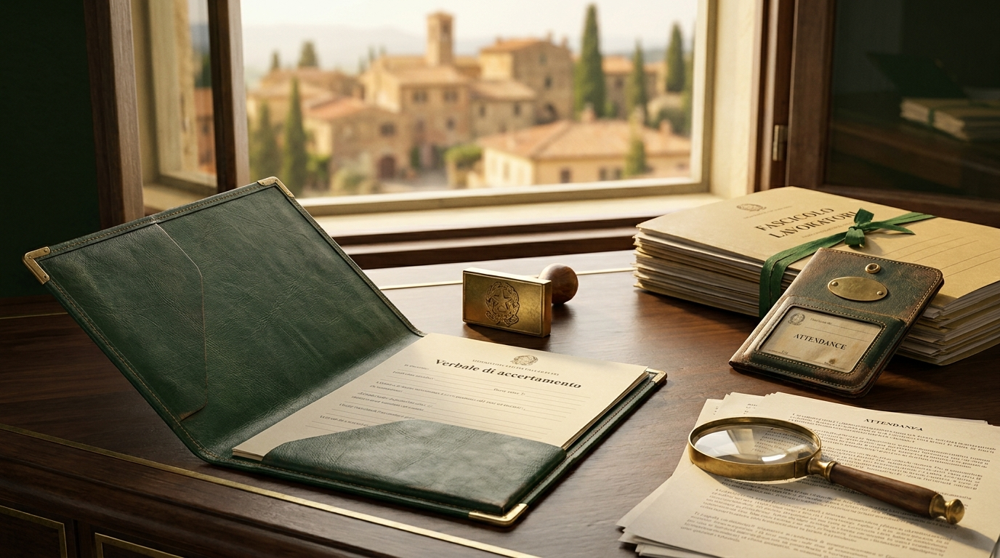

Controlli dell'Ispettorato del lavoro: poteri, procedure e tutele del datore
L'Ispettorato nazionale del lavoro può accedere ai luoghi di lavoro senza preavviso per verificare il rispetto delle norme su rapporti di lavoro, contribuzione e sicurezza. Conoscere poteri, limiti e procedure dell'accesso ispettivo aiuta il datore a gestire la verifica in modo corretto, evitando errori che aggravano la posizione e compromettono eventuali difese successive.

Il fatto
I controlli sul lavoro non sono un evento eccezionale: l'Ispettorato nazionale del lavoro (INL) effettua verifiche ordinarie, programmate o a seguito di segnalazione. L'accesso avviene di norma senza preavviso, perché la finalità è fotografare la situazione reale dell'azienda nel momento del controllo.
Gli ispettori possono entrare nei luoghi dove si svolge l'attività, identificare i presenti, raccogliere dichiarazioni e acquisire documenti. È un potere ampio, ma non illimitato: opera entro confini precisi che è utile conoscere in anticipo.
Inquadramento normativo
La cornice principale è il d.lgs. 81/2008 (Testo Unico sulla sicurezza), che disciplina obblighi e vigilanza in materia di salute e sicurezza nei luoghi di lavoro. Sul piano organizzativo, il d.lgs. 149/2015 ha istituito l'Ispettorato nazionale del lavoro, accentrando funzioni prima distribuite tra più enti.
Il d.l. 146/2021 ha poi rafforzato i poteri dell'INL, in particolare con l'estensione della sospensione dell'attività imprenditoriale in caso di gravi violazioni (ad esempio impiego di lavoratori "in nero" oltre una determinata soglia o violazioni della normativa antinfortunistica).
Non agisce solo l'INL: i controlli coinvolgono spesso INPS e INAIL, competenti rispettivamente su versamenti contributivi e premi assicurativi, e in materia di igiene del lavoro le ASL territoriali. Il quadro è dunque integrato e gli accertamenti possono avere riflessi su più fronti contemporaneamente.
Cosa verificano gli ispettori
L'accertamento si concentra di regola su tre aree.
La regolarità dei rapporti di lavoro: corrispondenza tra personale presente e personale registrato, contratti applicati, orario, eventuale lavoro irregolare.
La regolarità contributiva e assicurativa: corretto inquadramento dei lavoratori, versamenti a INPS e INAIL, posizioni aperte.
La sicurezza: documento di valutazione dei rischi, formazione, dispositivi di protezione, sorveglianza sanitaria.
Gli ispettori redigono un verbale di primo accesso, che dà conto delle operazioni svolte e delle dichiarazioni raccolte. Quel documento è il punto di partenza di qualunque sviluppo successivo.
Implicazioni pratiche
Per il datore di lavoro l'esito di un controllo non si esaurisce nella verifica: può tradursi in diffide, sanzioni amministrative, recupero di contributi e, nei casi più gravi, nel provvedimento di sospensione dell'attività, che può essere revocato solo con la regolarizzazione delle posizioni e il pagamento delle somme dovute.
Molti errori nascono in fase di accesso, non di violazione: dichiarazioni rese in modo impreciso, documenti consegnati senza verifica, comportamenti percepiti come ostruzionistici. Il modo in cui si affronta la verifica incide concretamente sulla posizione dell'azienda.
È importante anche conoscere le tutele: il verbale può essere contestato, le sanzioni sono impugnabili nei termini di legge e in alcuni casi l'ordinamento prevede meccanismi premiali per chi regolarizza tempestivamente.
Cosa fare in concreto
- Verifica l'identità degli ispettori e annota gli estremi del verbale di primo accesso, chiedendone copia.
- Collabora senza rilasciare dichiarazioni avventate: rispondi a ciò che ti viene chiesto, evitando ricostruzioni a memoria che potrebbero rivelarsi inesatte.
- Tieni ordinata e accessibile la documentazione essenziale (LUL, contratti, DVR, attestati di formazione, posizioni INPS e INAIL): la consultazione rapida riduce contestazioni.
- Non rimuovere né alterare nulla durante o dopo l'accesso: comportamenti di questo tipo aggravano la posizione.
- Consulta un professionista prima di firmare contestazioni o di rispondere a verbali: i termini per le difese sono brevi e decorrono subito.
Una nota di metodo
La prevenzione resta lo strumento più efficace. Un controllo periodico interno su contratti, contribuzione e adempimenti di sicurezza consente di intercettare le criticità prima che lo faccia l'Ispettorato. Consigliamo di programmare verifiche documentali con cadenza definita, soprattutto in presenza di assunzioni recenti, appalti o variazioni organizzative, così da affrontare l'eventuale accesso ispettivo su basi solide.
Disclaimer
Contributo informativo a cura di Tamburro & Partners - Avv. Giuseppe Tamburro. Non costituisce parere legale.
Ogni storia di lavoro ha i suoi tempi.
Se gestisci HR e vuoi un confronto su contenzioso, ispezioni o licenziamenti, scrivi allo studio. Ti rispondiamo entro un giorno lavorativo.